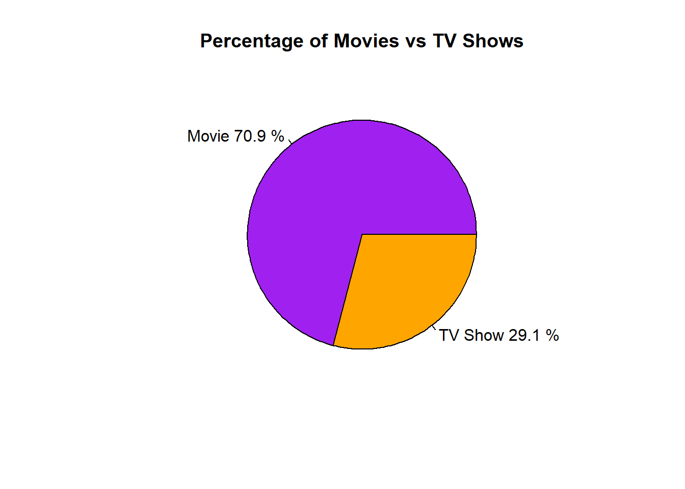

Warning: package 'dplyr' was built under R version 4.3.3Warning: package 'ggplot2' was built under R version 4.3.3Holly Milazzo
November 26, 2024
This uses MS Word as output format. See here for more information. You can switch #to other formats, like html or pdf. See the Quarto documentation for other formats.*/
Warning: package 'dplyr' was built under R version 4.3.3Warning: package 'ggplot2' was built under R version 4.3.3This study explores the hypothesis that the type of content (Movie or TV Show) and the country of origin influence the distribution of age ratings assigned to Netflix titles. Utilizing a detailed dataset containing information about Netflix titles, we conduct an extensive analysis involving data cleaning, exploratory data analysis, and statistical testing.
The intent of this analysis is to provide insights into how regional production practices and content types align with age rating distributions, offering valuable information for Netflix’s content acquisition and compliance strategies. This research highlights the importance of understanding content rating trends to better cater to diverse audiences and ensure appropriate content delivery.
Data is on Netflix Movies and TV Shows from Kaggle.com site. The description says: “The Netflix Titles dataset is a comprehensive compilation of movies and TV shows available on Netflix, covering various aspects such as the title type, director, cast, country of production, release year, rating, duration, genres (listed in), and a brief description. This dataset is instrumental for analyzing trends in Netflix content, understanding genre popularity, and examining the distribution of content across different regions and time periods”
The dataset contains 8,809 observations and the following 12 variables:
show_id: A unique identifier for each title.
type: The category of the title, which is either ‘Movie’ or ‘TV Show’
title: The name of the movie or TV show
director: The director(s) of the movie or TV show (Contains null values for some entries, especially TV shows where this information might not be applicable)
cast: The list of main actors/actresses in the title (Some entries might not have this information.)
country: The country or countries where the movie or TV show was produced.
date_added: The date the title was added to Netflix.
release_year: The year the movie or TV show was originally released.
rating: The age rating of the title.
duration: The duration of the title, in minutes for movies and seasons for TV shows
listed_in: The genres the title falls under.
description: A brief summary of the title.
State the research questions you plan to answer with this analysis.
“How do the type of content (Movie or TV Show) and the country of origin affect the distribution of age ratings on Netflix titles?”
This question focuses on understanding the relationship between content type, country of origin, and age ratings, which can provide valuable insights into regional production practices and content rating trends on Netflix
To cite other work (important everywhere, but likely happens first in introduction), make sure your references are in the #bibtex file specified in the YAML header above (here dataanalysis_template_references.bib) and have the right bibtex key. #Then you can include like this:
Examples of reproducible research projects can for instance be found in (McKay, Ebell, Billings, et al., 2020; McKay, Ebell, Dale, Shen, & Handel, 2020)
Describe your methods. That should describe the data, the cleaning processes, and the analysis approaches. You might want to provide a shorter description here and all the details in the supplement.
I will be using EDA initially and from there branching out into some hypothesis testing using Multinomial Logistic Regression to see if there is any association between country, content type, and rating.
I imported the data for Netflix Movies and TV Shows which was available on Kaggle.com site. My raw data file is available through file path folders: starter-analysis-exercise > data > raw-data > netflix_titles.xlsx
The file path to my code file for cleaning my dataset is: starter-analysis-exercise > code > processing-code > processingfile
First I imported the data…
here are some of the initial cleaning techniques and a few reasons why I chose to do them:
For the country column, I filled missing values with the mode (most frequently occurring country).
Converted the date_added to a Date format as a crucial step for any potential time series or date-related analysis.
Converted type to a factor since I am planning on performing statistical tests and/or modeling that may need categorical input features.
# Handling missing values
rawdata$director[is.na(rawdata$director)] <- "Unknown"
# Fill missing 'country' values with the mode (most frequent value)
mode_country <- names(sort(table(rawdata$country), decreasing = TRUE))[1]
rawdata$country[is.na(rawdata$country)] <- mode_country
# Safe conversion of date formats with error handling
rawdata$date_added <- as.Date(rawdata$date_added, format = "%m/%d/%Y")
if(any(is.na(rawdata$date_added))) {
warning("There were errors in date conversion. Check date formats.")
}Warning: There were errors in date conversion. Check date formats.# Standardizing categorical variables
rawdata$type <- as.factor(rawdata$type)
# Display the cleaned data
head(rawdata)# A tibble: 6 × 12
show_id type title director cast country date_added release_year rating
<chr> <fct> <chr> <chr> <chr> <chr> <date> <dbl> <chr>
1 s1 Movie Dick Jo… Kirsten… <NA> United… 2021-09-25 2020 PG-13
2 s2 TV Show Blood &… Unknown Ama … South … 2021-09-24 2021 TV-MA
3 s3 TV Show Ganglan… Julien … Sami… United… 2021-09-24 2021 TV-MA
4 s4 TV Show Jailbir… Unknown <NA> United… 2021-09-24 2021 TV-MA
5 s5 TV Show Kota Fa… Unknown Mayu… India 2021-09-24 2021 TV-MA
6 s6 TV Show Midnigh… Mike Fl… Kate… United… 2021-09-24 2021 TV-MA
# ℹ 3 more variables: duration <chr>, listed_in <chr>, description <chr>I also needed to do some clean up when it came to content ‘type’ as it included unwanted values…
show_id type title director
Length:8809 Movie :6132 Length:8809 Length:8809
Class :character TV Show :2677 Class :character Class :character
Mode :character William Wyler: 0 Mode :character Mode :character
cast country date_added release_year
Length:8809 Length:8809 Min. :2008-01-01 Min. :1925
Class :character Class :character 1st Qu.:2018-04-06 1st Qu.:2013
Mode :character Mode :character Median :2019-07-02 Median :2017
Mean :2019-05-17 Mean :2014
3rd Qu.:2020-08-19 3rd Qu.:2019
Max. :2024-04-05 Max. :2024
NA's :11 NA's :1
rating duration listed_in description
Length:8809 Length:8809 Length:8809 Length:8809
Class :character Class :character Class :character Class :character
Mode :character Mode :character Mode :character Mode :character
Explain anything related to your statistical analyses.
The relevant variables I’ll be using during my statistical analysis to determine how regional production practices and content types align with age rating distributions will be: Country, Type, and Rating.
Let’s double check if there is any other missing data in my cleaned_data before I perform my analysis… nothing significant in 3 variables I’ll be using.
# Calculate the number of missing values for each column in cleaned_data
missing_data_summary <- sapply(cleaned_data, function(x) sum(is.na(x)))
# Print the summary of missing data
print(missing_data_summary) show_id type title director cast country
0 0 0 0 825 0
date_added release_year rating duration listed_in description
11 1 5 4 1 1 I also want to check for any outliers as well…
# Create a boxplot for each numeric variable in the dataframe
numeric_vars <- sapply(cleaned_data, is.numeric)
if(any(numeric_vars)) {
# Filter only numeric columns
numeric_data <- cleaned_data[, numeric_vars]
# Melt the data for easy plotting with ggplot2
library(reshape2)
long_data <- melt(numeric_data)
# Plot
ggplot(long_data, aes(x = variable, y = value)) +
geom_boxplot(outlier.colour = "red", outlier.shape = 1) +
theme(axis.text.x = element_text(angle = 45, hjust = 1)) +
labs(title = "Boxplot for Each Numeric Variable", x = "Variables", y = "Values")
} else {
print("No numeric variables found for plotting.")
}Warning: package 'reshape2' was built under R version 4.3.3Warning: Removed 1 row containing non-finite outside the scale range
(`stat_boxplot()`).Given my hypothesis, which aims to explore how the type of content (Movie or TV Show) and the country of origin influence the distribution of age ratings on Netflix titles, regression testing does not seem like the best testing method because I using 2 categorical variables (Type and Rating) as target variables.My ‘rating’ variable is not ordinal either which means we’d also leave out performing logistic regression.
I believe the best testing methods in this case are either Chi-square (to test independence) or Multinomial Logistic Regression. MLR would be useful since the ‘Rating’ has multiple categories without order and would allow me to model the probability of each rating category as a function of ‘Type’ and ‘Country’.
I will need install the following packages for the next part of my analysis
Initially, when I ran the model it gave an error due to the complexity in the number of parameters it created based on the variations of categories I have in my variables.
ChatGPT recommended I use the code below to create a decay term for regularization, which helps to manage the complexity of the model by shrinking the regression coefficients.
With the convergence of my multinomial logistic regression as indicated by “converged” in the output below, the next steps involve interpreting the model’s results and using them to validate my hypothesis or make further decisions.
# Assuming 'Country' has many categories, we reduce them
cleaned_data$country <- fct_lump_n(cleaned_data$country, n = 10) # Keeps the top 10 countries, others lumped into "Other"
cleaned_data$country <- factor(cleaned_data$country)
# Fit the model with increased decay for regularization
fit <- multinom(type ~ country + rating, data = cleaned_data, MaxNWts = 10000, decay = 0.1)Warning in multinom(type ~ country + rating, data = cleaned_data, MaxNWts =
10000, : group 'William Wyler' is empty# weights: 29 (28 variable)
initial value 6102.467778
iter 10 value 4551.137216
iter 20 value 4300.674269
iter 30 value 4276.943332
final value 4276.909270
convergedNow to run my multinomial model….
cleaned_data$country <- as.factor(cleaned_data$country)
cleaned_data$type <- as.factor(cleaned_data$type)
cleaned_data$rating <- as.factor(cleaned_data$rating)
multinom_model <- multinom(rating ~ country + type, data = cleaned_data)# weights: 252 (221 variable)
initial value 25446.832957
iter 10 value 18728.030041
iter 20 value 16906.955079
iter 30 value 15526.132442
iter 40 value 14980.668736
iter 50 value 14724.154902
iter 60 value 14656.735665
iter 70 value 14624.490886
iter 80 value 14615.654822
iter 90 value 14612.398803
iter 100 value 14611.228013
final value 14611.228013
stopped after 100 iterations$n
[1] 13 0 18
$nunits
[1] 32
$nconn
[1] 0 0 0 0 0 0 0 0 0 0 0 0 0 0 0 14 28 42 56
[20] 70 84 98 112 126 140 154 168 182 196 210 224 238 252
$conn
[1] 0 1 2 3 4 5 6 7 8 9 10 11 12 13 0 1 2 3 4 5 6 7 8 9 10
[26] 11 12 13 0 1 2 3 4 5 6 7 8 9 10 11 12 13 0 1 2 3 4 5 6 7
[51] 8 9 10 11 12 13 0 1 2 3 4 5 6 7 8 9 10 11 12 13 0 1 2 3 4
[76] 5 6 7 8 9 10 11 12 13 0 1 2 3 4 5 6 7 8 9 10 11 12 13 0 1
[101] 2 3 4 5 6 7 8 9 10 11 12 13 0 1 2 3 4 5 6 7 8 9 10 11 12
[126] 13 0 1 2 3 4 5 6 7 8 9 10 11 12 13 0 1 2 3 4 5 6 7 8 9
[151] 10 11 12 13 0 1 2 3 4 5 6 7 8 9 10 11 12 13 0 1 2 3 4 5 6
[176] 7 8 9 10 11 12 13 0 1 2 3 4 5 6 7 8 9 10 11 12 13 0 1 2 3
[201] 4 5 6 7 8 9 10 11 12 13 0 1 2 3 4 5 6 7 8 9 10 11 12 13 0
[226] 1 2 3 4 5 6 7 8 9 10 11 12 13 0 1 2 3 4 5 6 7 8 9 10 11
[251] 12 13
$nsunits
[1] 14
$decay
[1] 0 66 min 74 min 84 min A G NC-17
1 2.197696e-04 3.977743e-04 3.977743e-04 3.977743e-04 1.149018e-02 3.866288e-04
2 1.046572e-07 2.200441e-08 2.200441e-08 2.200441e-08 1.654515e-06 1.734750e-06
3 1.258220e-05 5.534332e-06 5.534332e-06 5.534332e-06 3.762838e-06 1.485806e-06
4 1.258220e-05 5.534332e-06 5.534332e-06 5.534332e-06 3.762838e-06 1.485806e-06
5 4.468941e-08 6.704574e-10 6.704574e-10 6.704574e-10 2.364318e-10 2.754968e-10
6 1.258220e-05 5.534332e-06 5.534332e-06 5.534332e-06 3.762838e-06 1.485806e-06
NR PG PG-13 R TV-14 TV-G
1 0.0131985545 6.803521e-02 1.189387e-01 1.802553e-01 0.1459130 0.02467179
2 0.0016490449 1.866344e-06 4.479769e-06 8.648112e-04 0.2888059 0.02839096
3 0.0018656069 2.736761e-06 6.625572e-06 1.151475e-03 0.2363820 0.04348793
4 0.0018656069 2.736761e-06 6.625572e-06 1.151475e-03 0.2363820 0.04348793
5 0.0004001956 5.796439e-08 1.573624e-07 4.749477e-06 0.5875946 0.01035897
6 0.0018656069 2.736761e-06 6.625572e-06 1.151475e-03 0.2363820 0.04348793
TV-MA TV-PG TV-Y TV-Y7 TV-Y7-FV UR
1 0.2964644 0.0793353 0.027272531 0.03160530 0.0006127349 4.072383e-04
2 0.4582647 0.1051285 0.059006494 0.05739596 0.0004821809 1.587896e-06
3 0.4033705 0.1232277 0.085883178 0.10420632 0.0003801792 1.367047e-06
4 0.4033705 0.1232277 0.085883178 0.10420632 0.0003801792 1.367047e-06
5 0.2257690 0.1376917 0.009731089 0.02802596 0.0004235554 1.988237e-10
6 0.4033705 0.1232277 0.085883178 0.10420632 0.0003801792 1.367047e-06Interpretation of Multinomial Logistic Regression model results
The results from the MLR provided a complex but informative view into how different countries and types of content (e.g., Movies vs. TV Shows) relate to the ratings of Netflix titles. Here’s a breakdown and interpretation of the results:
The model successfully converged after 100 iterations, indicating that the algorithm was able to find a stable solution. The final value (14611.228013) of the deviance indicates the fit of the model to my data.
The coefficients for each level of the factors (Country, Type) show how each category relates to the probability of the content having a specific rating compared to the baseline category, however, without knowing the standard errors or p-values it’s challenging to discuss the statistical significance of each coefficient - only the magnitude and direction (positive or negative) of the coefficients can provide insights at this point.
Distribution between Movies and TV Shows:
# Perform the group_by and summarise operations
type_distribution <- aggregate(. ~ type, data = cleaned_data, FUN = length)
names(type_distribution)[2] <- "count"
# Plot the distribution of content types
barplot(height = type_distribution$count,
names.arg = type_distribution$type,
col = c("purple", "orange"),
main = "Distribution of Content Types - Movies v TV Shows",
xlab = "Type",
ylab = "Count",
las = 1) # las = 1 makes axis labels horizontalWe see from the distribution that it appears movies are being streamed substantially more than TV shows, but to get a better sense of this let’s represent it as a percentage instead
type_distribution <- aggregate(. ~ type, data = cleaned_data, FUN = length)
names(type_distribution)[2] <- "count"
type_distribution$percentage <- round((type_distribution$count / sum(type_distribution$count)) * 100, 1)
labels <- paste(type_distribution$type, type_distribution$percentage, "%")
pie(type_distribution$count,
labels = labels,
col = c("purple", "orange"),
main = "Percentage of Movies vs TV Shows")
Now I’d like to see which countries the Movie/TV show content originate from
library(ggplot2)
country_counts <- head(sort(table(cleaned_data$country), decreasing = TRUE), 10)
# Convert to data frame for ggplot
country_df <- data.frame(
country = names(country_counts),
count = as.numeric(country_counts)
)
# Create the bar chart
p <- ggplot(country_df, aes(x = reorder(country, -count), y = count)) +
geom_bar(stat = "identity", fill = "purple") +
geom_text(aes(label = count), vjust = -0.3) +
labs(x = "Country", y = "Count", title = "Top 10 Countries (Top 3 Highlighted)") +
theme(axis.text.x = element_text(angle = 45, hjust = 1)) +
geom_bar(data = country_df[1:3, ], aes(x = country, y = count), stat = "identity", fill = "orange")
print(p)Let’s also explore what the content consumption is like between countries…
# Count occurrences of each country and type
count_data <- count(cleaned_data, country, type)
# Group by country
grouped_data <- group_by(count_data, country)
# Calculate percentage within each group
grouped_data <- mutate(grouped_data, percentage = n / sum(n) * 100)
# Ungroup the data
percentage_data <- ungroup(grouped_data)
# Show percentage_data
percentage_data# A tibble: 22 × 4
country type n percentage
<fct> <fct> <int> <dbl>
1 Canada Movie 122 67.4
2 Canada TV Show 59 32.6
3 Egypt Movie 92 86.8
4 Egypt TV Show 14 13.2
5 France Movie 75 60.5
6 France TV Show 49 39.5
7 India Movie 893 91.9
8 India TV Show 79 8.13
9 Japan Movie 76 31.0
10 Japan TV Show 169 69.0
# ℹ 12 more rows# Calculate total count of each country
country_totals <- aggregate(percentage_data$n, by = list(percentage_data$country), FUN = sum)
# Select top 10 countries by total count
top_10_countries <- country_totals[order(country_totals$x, decreasing = TRUE), ]$Group.1[1:10]
# Subset data for top 10 countries only
top_10_data <- subset(percentage_data, country %in% top_10_countries)
# Create pie chart for top 10 countries with improved readability
library(ggplot2)
# Plotting the pie chart
pie_plot <- ggplot(top_10_data, aes(x = "", y = n, fill = type)) +
geom_bar(stat = "identity", width = 1, color = "white") +
coord_polar(theta = "y") +
facet_wrap(~ country, scales = "free_y") +
geom_text(aes(label = paste0(round(percentage, 2), "%")),
position = position_stack(vjust = 0.5), color = "white", size = 4, family = "sans") + # Adjust text size, color, and font family
theme_void() +
scale_fill_manual(values = c("purple", "orange"), labels = c("Movie", "TV Show")) + # Adjust colors and labels
theme(legend.position = "bottom", legend.text = element_text(size = 10, family = "sans"), plot.title = element_text(hjust = 0.5, size = 14, family = "sans")) + # Adjust legend and title text
labs(fill = "Type", title = "Percentage of Movies vs TV Shows in Top 10 Countries") # Adjust title
# Show the plot
print(pie_plot)Note the loading of the data providing a relative path using the ../../ notation. (Two dots means a folder up). You never want to specify an absolute path like C:\ahandel\myproject\results\ because if you share this with someone, it won’t work for them since they don’t have that path. You can also use the here R package to create paths. See examples of that below. I recommend the here package, but I’m showing the other approach here just in case you encounter it.
To get some further insight into your data, if reasonable you could compute simple statistics (e.g. simple models with 1 predictor) to look for associations between your outcome(s) and each individual predictor variable. Though note that unless you pre-specified the outcome and main exposure, any “p<0.05 means statistical significance” interpretation is not valid.
Given my hypothesis…
My predictor Variables (Independent Variables):
and my response Variable (Dependent Variable):
Let’s perform some basic statistics to examine the associations between the outcome variable (rating) and each individual predictor variable (type and country).
# Cross-tabulation of type and rating
type_rating_table <- table(rawdata$type, rawdata$rating)
print(type_rating_table)
66 min 74 min 84 min A Classic Movies, Documentaries G
Movie 1 1 1 1 0 41
TV Show 0 0 0 0 0 0
William Wyler 0 0 0 0 1 0
NC-17 NR PG PG-13 R TV-14 TV-G TV-MA TV-PG TV-Y TV-Y7
Movie 3 75 287 490 797 1427 126 2062 539 131 139
TV Show 0 5 0 0 2 733 94 1146 323 176 195
William Wyler 0 0 0 0 0 0 0 0 0 0 0
TV-Y7-FV UR
Movie 5 3
TV Show 1 0
William Wyler 0 0Warning in chisq.test(type_rating_table): Chi-squared approximation may be
incorrect
Pearson's Chi-squared test
data: type_rating_table
X-squared = 9853.7, df = 36, p-value < 2.2e-16Interpretation of results:
The chi-square test statistic is very large (9853.7), and the p-value is extremely small (less than 2.2e-16). This indicates that there is a significant association between type and rating. In other words, the type of content (Movie or TV Show) and the rating are not independent; they are related
what about the association between country and rating though…
Warning in chisq.test(country_rating_table): Chi-squared approximation may be
incorrect
Pearson's Chi-squared test
data: country_rating_table
X-squared = 26495, df = 13464, p-value < 2.2e-16Interpretation of results:
It appears, again, that the chi-square test statistic is very large (26495), and the p-value is extremely small (less than 2.2e-16). Which indicates that there is a significant association between country and rating. In other words, the country of origin and the rating are not independent; they are related.
Given the high association between all my variables (type, country, and rating), I will do some a bit more exploring.
First, I could visually explore the association between my categorical variables using a stacked bar chart, and then run a random forest model to understand the importance of using different predictors and their relationships
[1] "United States" "South Africa" "India"
[4] "United Kingdom" "Germany" "Mexico"
[7] "Turkey" "Australia" "Finland"
[10] "China" "Nigeria" "Japan"
[13] "Spain" "France" "Belgium"
[16] "South Korea" "Argentina" "Russia"
[19] "Canada" "Hong Kong" "Italy"
[22] "" "Ireland" "New Zealand"
[25] "Jordan" "Colombia" "Switzerland"
[28] "Israel" "Brazil" "Taiwan"
[31] "Bulgaria" "Poland" "Saudi Arabia"
[34] "Thailand" "Indonesia" "Egypt"
[37] "Kuwait" "Malaysia" "Vietnam"
[40] "Sweden" "Lebanon" "Romania"
[43] "Philippines" "Iceland" "Denmark"
[46] "United Arab Emirates" "Netherlands" "Norway"
[49] "Syria" "Mauritius" "Austria"
[52] "Czech Republic" "Cameroon" "Uruguay"
[55] "United Kingdom," "Kenya" "Chile"
[58] "Luxembourg" "Bangladesh" "Portugal"
[61] "Hungary" "Senegal" "Singapore"
[64] "Serbia" "Namibia" "Peru"
[67] "Mozambique" "Belarus" "Ghana"
[70] "Zimbabwe" "Puerto Rico" "Pakistan"
[73] "Cyprus" "Paraguay" "Croatia"
[76] "United States," "Cambodia" "Georgia"
[79] "Soviet Union" "Greece" "West Germany"
[82] "Iran" "Venezuela" "Poland,"
[85] "Slovenia" "Guatemala" "Ukraine"
[88] "Jamaica" "1944" "Somalia" filtered_data <- rawdata %>%
filter(!is.na(type))
# Optionally, filter the data to include only a subset of countries
# For example, top 10 countries by count of titles
top_countries <- filtered_data %>%
count(country, sort = TRUE) %>%
top_n(10, n) %>%
pull(country)
filtered_data <- filtered_data %>%
filter(country %in% top_countries)
# Create the bar chart
ggplot(filtered_data, aes(x = country, fill = rating)) +
geom_bar(position = "fill") +
facet_wrap(~ type, scales = "free_y") +
labs(title = "Proportion of Ratings by Type and Country", x = "Country", y = "Proportion") +
theme_minimal() +
theme(axis.text.x = element_text(angle = 45, hjust = 1),
legend.position = "bottom")Before getting started with our random forest we’ll need to install some necessary packages
Warning: package 'caret' was built under R version 4.3.3Loading required package: latticeWarning: package 'randomForest' was built under R version 4.3.3randomForest 4.7-1.1Type rfNews() to see new features/changes/bug fixes.
Attaching package: 'randomForest'The following object is masked from 'package:ggplot2':
marginThe following object is masked from 'package:dplyr':
combineWarning: package 'mice' was built under R version 4.3.3
Attaching package: 'mice'The following object is masked from 'package:stats':
filterThe following objects are masked from 'package:base':
cbind, rbindIn this step we convert our categorical variables into factors:
In this step we somewhat use imputation (replace ‘na’ in our data with mode):
calculate_mode <- function(x) {
uniq_x <- unique(x)
uniq_x[which.max(tabulate(match(x, uniq_x)))]
}
# Function to impute missing values
impute_missing <- function(df) {
df[] <- lapply(df, function(col) {
if (is.numeric(col)) {
# Impute numeric columns with median
col[is.na(col)] <- median(col, na.rm = TRUE)
} else {
# Impute categorical columns with mode
col[is.na(col)] <- calculate_mode(col)
}
return(col)
})
return(df)
}Now to split the data into training and test sets…
imputed_data <- impute_missing(filtered_data)
set.seed(123)
train_index <- createDataPartition(imputed_data$rating, p = 0.8, list = FALSE)Warning in createDataPartition(imputed_data$rating, p = 0.8, list = FALSE):
Some classes have a single record ( 66 min, 74 min, 84 min, A ) and these will
be selected for the sampleNow to train the random forest model…
set.seed(321)
rf_model <- randomForest(rating ~ type + country, data = train_data, ntree = 500, mtry = 2, importance = TRUE)
print(rf_model)
Call:
randomForest(formula = rating ~ type + country, data = train_data, ntree = 500, mtry = 2, importance = TRUE)
Type of random forest: classification
Number of trees: 500
No. of variables tried at each split: 2
OOB estimate of error rate: 60.89%
Confusion matrix:
66 min 74 min 84 min A G NC-17 NR PG PG-13 R TV-14 TV-G TV-MA TV-PG
66 min 0 0 0 0 0 0 0 0 0 0 0 0 1 0
74 min 0 0 0 0 0 0 0 0 0 0 0 0 1 0
84 min 0 0 0 0 0 0 0 0 0 0 0 0 1 0
A 0 0 0 0 0 0 0 0 0 0 0 0 1 0
G 0 0 0 0 0 0 0 0 0 0 0 0 32 0
NC-17 0 0 0 0 0 0 0 0 0 0 0 0 3 0
NR 0 0 0 0 0 0 0 0 0 2 3 0 47 0
PG 0 0 0 0 0 0 0 0 0 6 4 0 207 0
PG-13 0 0 0 0 0 0 0 0 0 3 5 0 354 0
R 0 0 0 0 0 0 0 0 0 6 2 0 566 0
TV-14 0 0 0 0 0 0 0 0 0 6 555 0 729 0
TV-G 0 0 0 0 0 0 0 0 0 1 6 0 137 0
TV-MA 0 0 0 0 0 0 0 0 0 8 266 0 1651 0
TV-PG 0 0 0 0 0 0 0 0 0 5 131 0 432 0
TV-Y 0 0 0 0 0 0 0 0 0 4 6 0 216 0
TV-Y7 0 0 0 0 0 0 0 0 0 1 29 0 222 0
TV-Y7-FV 0 0 0 0 0 0 0 0 0 0 1 0 3 0
UR 0 0 0 0 0 0 0 0 0 0 0 0 3 0
TV-Y TV-Y7 TV-Y7-FV UR class.error
66 min 0 0 0 0 1.0000000
74 min 0 0 0 0 1.0000000
84 min 0 0 0 0 1.0000000
A 0 0 0 0 1.0000000
G 0 0 0 0 1.0000000
NC-17 0 0 0 0 1.0000000
NR 0 0 0 0 1.0000000
PG 0 0 0 0 1.0000000
PG-13 0 0 0 0 1.0000000
R 0 0 0 0 0.9895470
TV-14 0 0 0 0 0.5697674
TV-G 0 0 0 0 1.0000000
TV-MA 0 0 0 0 0.1423377
TV-PG 0 0 0 0 1.0000000
TV-Y 0 0 0 0 1.0000000
TV-Y7 0 0 0 0 1.0000000
TV-Y7-FV 0 0 0 0 1.0000000
UR 0 0 0 0 1.0000000And lastly, let’s evaluate the performance of our random forest:
predictions <- predict(rf_model, test_data)
confusion_matrix <- confusionMatrix(predictions, test_data$rating)
head(confusion_matrix)$positive
NULL
$table
Reference
Prediction 66 min 74 min 84 min A G NC-17 NR PG PG-13 R TV-14 TV-G
66 min 0 0 0 0 0 0 0 0 0 0 0 0
74 min 0 0 0 0 0 0 0 0 0 0 0 0
84 min 0 0 0 0 0 0 0 0 0 0 0 0
A 0 0 0 0 0 0 0 0 0 0 0 0
G 0 0 0 0 0 0 0 0 0 0 0 0
NC-17 0 0 0 0 0 0 0 0 0 0 0 0
NR 0 0 0 0 0 0 0 0 0 0 0 0
PG 0 0 0 0 0 0 0 0 0 0 0 0
PG-13 0 0 0 0 0 0 0 0 0 0 0 0
R 0 0 0 0 0 0 0 1 0 0 1 2
TV-14 0 0 0 0 0 0 1 0 0 0 137 2
TV-G 0 0 0 0 0 0 0 0 0 0 0 0
TV-MA 0 0 0 0 7 0 11 53 90 143 184 31
TV-PG 0 0 0 0 0 0 0 0 0 0 0 0
TV-Y 0 0 0 0 0 0 0 0 0 0 0 0
TV-Y7 0 0 0 0 0 0 0 0 0 0 0 0
TV-Y7-FV 0 0 0 0 0 0 0 0 0 0 0 0
UR 0 0 0 0 0 0 0 0 0 0 0 0
Reference
Prediction TV-MA TV-PG TV-Y TV-Y7 TV-Y7-FV UR
66 min 0 0 0 0 0 0
74 min 0 0 0 0 0 0
84 min 0 0 0 0 0 0
A 0 0 0 0 0 0
G 0 0 0 0 0 0
NC-17 0 0 0 0 0 0
NR 0 0 0 0 0 0
PG 0 0 0 0 0 0
PG-13 0 0 0 0 0 0
R 9 0 1 1 0 0
TV-14 80 32 2 4 0 0
TV-G 0 0 0 0 0 0
TV-MA 392 110 53 58 1 0
TV-PG 0 0 0 0 0 0
TV-Y 0 0 0 0 0 0
TV-Y7 0 0 0 0 0 0
TV-Y7-FV 0 0 0 0 0 0
UR 0 0 0 0 0 0
$overall
Accuracy Kappa AccuracyLower AccuracyUpper AccuracyNull
0.376244666 0.084343129 0.350848019 0.402159713 0.342105263
AccuracyPValue McnemarPValue
0.003984687 NaN
$byClass
Sensitivity Specificity Pos Pred Value Neg Pred Value Precision
Class: 66 min NA 1.0000000 NA NA NA
Class: 74 min NA 1.0000000 NA NA NA
Class: 84 min NA 1.0000000 NA NA NA
Class: A NA 1.0000000 NA NA NA
Class: G 0.0000000 1.0000000 NaN 0.9950213 NA
Class: NC-17 NA 1.0000000 NA NA NA
Class: NR 0.0000000 1.0000000 NaN 0.9914651 NA
Class: PG 0.0000000 1.0000000 NaN 0.9615932 NA
Class: PG-13 0.0000000 1.0000000 NaN 0.9359886 NA
Class: R 0.0000000 0.9881235 0.0000000 0.8971963 0.0000000
Class: TV-14 0.4254658 0.8883764 0.5310078 0.8388502 0.5310078
Class: TV-G 0.0000000 1.0000000 NaN 0.9751067 NA
Class: TV-MA 0.8149688 0.1989189 0.3459841 0.6739927 0.3459841
Class: TV-PG 0.0000000 1.0000000 NaN 0.8990043 NA
Class: TV-Y 0.0000000 1.0000000 NaN 0.9601707 NA
Class: TV-Y7 0.0000000 1.0000000 NaN 0.9551920 NA
Class: TV-Y7-FV 0.0000000 1.0000000 NaN 0.9992888 NA
Class: UR NA 1.0000000 NA NA NA
Recall F1 Prevalence Detection Rate
Class: 66 min NA NA 0.0000000000 0.00000000
Class: 74 min NA NA 0.0000000000 0.00000000
Class: 84 min NA NA 0.0000000000 0.00000000
Class: A NA NA 0.0000000000 0.00000000
Class: G 0.0000000 NA 0.0049786629 0.00000000
Class: NC-17 NA NA 0.0000000000 0.00000000
Class: NR 0.0000000 NA 0.0085348506 0.00000000
Class: PG 0.0000000 NA 0.0384068279 0.00000000
Class: PG-13 0.0000000 NA 0.0640113798 0.00000000
Class: R 0.0000000 NaN 0.1017069701 0.00000000
Class: TV-14 0.4254658 0.4724138 0.2290184922 0.09743954
Class: TV-G 0.0000000 NA 0.0248933144 0.00000000
Class: TV-MA 0.8149688 0.4857497 0.3421052632 0.27880512
Class: TV-PG 0.0000000 NA 0.1009957326 0.00000000
Class: TV-Y 0.0000000 NA 0.0398293030 0.00000000
Class: TV-Y7 0.0000000 NA 0.0448079659 0.00000000
Class: TV-Y7-FV 0.0000000 NA 0.0007112376 0.00000000
Class: UR NA NA 0.0000000000 0.00000000
Detection Prevalence Balanced Accuracy
Class: 66 min 0.00000000 NA
Class: 74 min 0.00000000 NA
Class: 84 min 0.00000000 NA
Class: A 0.00000000 NA
Class: G 0.00000000 0.5000000
Class: NC-17 0.00000000 NA
Class: NR 0.00000000 0.5000000
Class: PG 0.00000000 0.5000000
Class: PG-13 0.00000000 0.5000000
Class: R 0.01066856 0.4940618
Class: TV-14 0.18349929 0.6569211
Class: TV-G 0.00000000 0.5000000
Class: TV-MA 0.80583215 0.5069439
Class: TV-PG 0.00000000 0.5000000
Class: TV-Y 0.00000000 0.5000000
Class: TV-Y7 0.00000000 0.5000000
Class: TV-Y7-FV 0.00000000 0.5000000
Class: UR 0.00000000 NA
$mode
[1] "sens_spec"
$dots
list()The results from the random forest model’s performance are summarized in the confusion matrix and accompanying statistics. The overall accuracy of the model is 37.62%, indicating that it correctly classified approximately 38% of the instances. This accuracy is slightly better than the No Information Rate (NIR) of 34.21%, which represents the accuracy we would get by always predicting the most frequent class. The confidence interval for the model’s accuracy ranges from 35.08% to 40.22%, suggesting the true accuracy lies within this interval. The p-value (0.003985) indicates that the model’s accuracy is significantly better than random guessing.
However, the Kappa value of 0.0843 reveals poor agreement between the predicted and actual classifications when accounting for chance. The statistics by class show varying performance across different rating categories. For instance, the sensitivity for “TV-14” is 42.55%, meaning the model correctly identified about 43% of “TV-14” ratings. The specificity for “TV-14” is higher at 88.84%, indicating that the model correctly identified about 89% of non-“TV-14” ratings.
The precision for “TV-14” is 53.10%, meaning that just over half of the predicted “TV-14” ratings were correct. In contrast, the model struggles with classes that have low prevalence in the dataset, resulting in low sensitivity and precision for those classes.
Overall, the model performs moderately well, particularly for certain classes like “TV-MA” which have higher sensitivity and balanced accuracy. However, the model’s performance could be improved by addressing class imbalance, adding more features, tuning hyperparameters, and potentially using more complex ensemble methods. These steps could help achieve better classification accuracy and agreement between predicted and actual ratings.
The results indicate that the country of origin significantly influences the distribution of age ratings assigned to Netflix titles, as shown by the high importance of the country variable in the random forest model. The substantial decrease in model accuracy and increase in node impurity when the country variable is excluded further supports this finding. While the type of content (Movie or TV Show) also affects the distribution of age ratings, its impact is less pronounced compared to the country of origin. Excluding the type variable results in a smaller decrease in model performance. Overall, both predictor variables—type and country—contribute to the prediction of age ratings, but the country of origin has a more dominant influence, highlighting that while both factors are important, the country’s impact is stronger.
I did get some of my EDA inspiration from : Link
Here’s a video tutorial on how to say “Netflix and Chill” in 26 different languages:Link